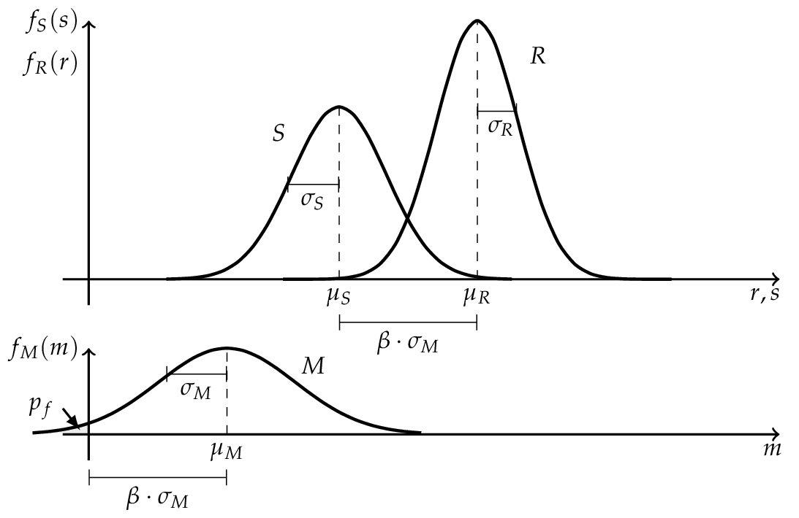

Structural reliability fundamentals#
Structural reliability analysis quantifies the probability that a structure fails to satisfy a stated performance requirement, under an explicit model of uncertain actions, resistance and model error. [Melchers1999]
Limit states#
A limit state specifies the boundary between acceptable and unacceptable performance. The event must be defined before its probability can be calculated; different requirements can produce different component or system events. [Malioka2009]
In general, the term “failure” is a vague definition because it means different things in different cases. For this purpose the concept of limit state is used to define failure in the context of SRA. [Nowak2000]
Note
A limit state represents a boundary between desired and undesired performance of a structure.
This boundary is usually interpreted and formulated within a mathematical model for the functionality and performance of a structural system, and expressed by a limit state function. [Ditlevsen2007]
Note
[Limit State Function]
Let \({\bf X}\) describe a set of random variables \({X}_1 \dots {X}_n\) which influence the performance of a structure. Then the functionality of the structure is called limit state function, denoted by \(g\) and given by
The boundary between desired and undesired performance would be given when \(g({\bf X}) = 0\). If \(g({\bf X}) > 0\), it implies a desired performance and the structure is safe. An undesired performance is given by \(g({\bf X}) \leq 0\) and it implies an unsafe structure or failure of the system. [Baker2010]
The probability of failure \(p_f\) is equal to the probability that an undesired performance will occur. It can be mathematical expressed as
assuming that all random variables \({\bf X}\) are continuous. However, there are three major issues related to the Equation (2), proposed by [Baker2010]:
There is not always enough information to define the complete joint probability density function \(f_X({\bf x})\).
The limit state function \(g({\bf X})\) may be difficult to evaluate.
Even if \(f_X({\bf x})\) and \(g({\bf X})\) are known, numerical computing of high dimensional integrals is difficult.
For this reason various methods have been developed to overcome these chal- lenges. The most common ones are the Monte Carlo simulation method and the First Order Reliability Method (FORM).
The Classical approach#
Before discussing more general methods, the principles are shown on a “historical” and simplified limit state function.
Where \(R\) is a random variable for the resistance with the outcome \(r\) and \(S\) represents a random variable for the internal strength or stress with the outcome of \(s\). [Lemaire2010] The probability of failure is according to Equation (2):
If \(R\) and \(S\) are independent the Equation (4) can be rewritten as a convolution integral, where the probability of failure \(p_f\) can be (numerical) computed. [Schneider2007]

If \(R\) and \(S\) are independent and \(R \sim N (\mu_R , \sigma_R )\) as well as \(S \sim N (\mu_S , \sigma_S )\) are normally distributed, the convolution integral (5) can be evaluated analytically.
where \(M\) is the safety margin and also normal distributed \(M \sim N (\mu_M , \sigma_M )\) with the parameters
The probability of failure \(p_f\) can be determined by the use of the standard normal distribution function.
Where \(\beta\) is the so called Cornell reliability index, named after Cornell (1969), and is equal to the number of the standard derivation \(\sigma_M\) by which the mean values \(\mu_M\) of the safety margin \(M\) are zero. [Faber2009]
{kind=link}

Hasofer and Lind reliability index#
The reliability index can be interpreted as a measure of the distance to the failure surface, as shown in the Figure above. In the one dimensional case the standard deviation of the safety margin was used as scale. To obtain a similar scale in the case of more basic variables, Hasofer and Lind (1974) proposed a non-homogeneous linear mapping of a set of random variables \({\bf X}\) from a physical space into a set of normalized and uncorrelated random variables \({\bf Z}\) in a normalized space. [Madsen2006]
Note
[Hasofer and Lind Reliability Index]
The Hasofer and Lind reliability index, denoted by \(\beta_{HL}\), is the shortest distance \({\bf z}^*\) from the origin to the failure surface \(g({\bf Z})\) in a normalized space.
The shortest distance to the failure surface \({\bf z}^*\) is also known as design point and \({\vec \alpha}\) denotes the normal vector to the failure surface \(g({\bf Z})\) and is given by
where \(g({\bf z})\) is the gradient vector, which is assumed to exist: [Madsen2006]
Finding the reliability index \(\beta\) is therefore an optimization problem
The calculation of \(\beta\) can be undertaken in a number of different ways. In the general case where the failure surface is non-linear, an iterative method must be used. [Thoft-Christensen]
Use this method: Specifying a reliability model · A first reliability analysis · Models and analysis options
For coordinate conventions, see Notation and probability spaces.